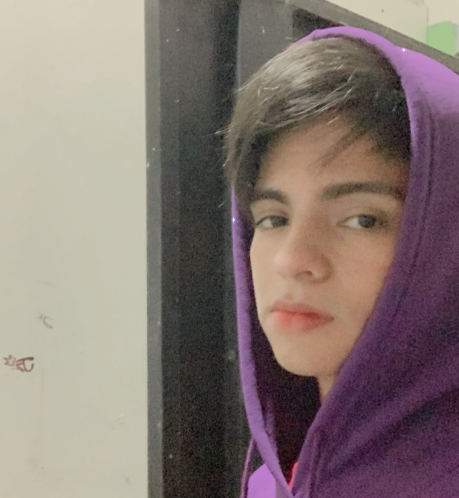

Datos Personales
Edy Jezael Yanes Bustillo, conocido tambien como Jezaell o Jeza, es un rapero, freestyler, aspirante
a ser un buen artista en el Hip Hop
y amante del arte como, el Grafitti y el dibujo.
Nacio el 6 de Julio del 2006, en la ciudad de Comayagua en Honduras, su niñez y adolescencia la vivio en la Colonia 1ero de Mayo,
actualmente vive ahi mismo, lamentablemente para el, esa colonia no tiene esa aspiracion como el en el Rap, y le toco empezar solo
en la movida del Rap.
El color favorito de Jezaell esta entre el rojo y el morado
Inicios en el Freestyle
Jezaell comenzo a tener una atraccion hacia al Freestyle en el año 2019, como por el mes de Agosto,
ya que unos amigos empezaron a hablar de batallas de freestyle en Argentina, de la liga de FMS Argentina.
Desde ese momento Jezaell se enfoco mucho mas en esa cultura, fue solamente espectador de batallas de Freestyle durante 4 años, y aun que el
hubiese querido empezar antes en las batallas de Freestyle hubiera sido imposible, porque en 2020 empezo la pandemia del COVID-19. Pero a pesar
de ese tiempo de encierro, nunca dejo su aspiracion al Freestyle, mas bien se motivo mas, encontro su escencia en el Freestyle, el cual es la metrica, ya que en pandemia
conocio a un freestyler con ese estilo al rapear, el rapero es Lit-Killah, un rapero argentino, el referente de Jezaell.
Primera Batalla De Rap
La primera batalla de Jezaell fue hace poco, fue en Siguatepeque, el Domingo 18 de Febrero de este año 2024, o como el lo nombra su 2K24.
Inicios en el Rap
Jezaell no fue en el 2019 que conocio el Rap por el Freestyle, el ya conocia el Rap desde muy chico, a sus 7 años escuchaba Eminem, Snoop Dogg y mas raperos Americanos.
Tiempo despues, a sus 10 años conocio un rapero llamado Zarcort y uno llamado Kronno Zomber, 2 raperos que se dedicaban a hacer RapPlays, con ellos 2 Jezaell
se enamoro aun mas del Rap, ya que el veia esos raps con su hermano mayor y un primo.
Zarcort y Kronno Zomber tenian un estilo de rapear muy rapido, algo que le llamaba mucho la atencion a Jezaell, eso le animo
a practicar y aprenderse las partes rapidas en esos raps y asi tener una habilidad al rapear, el doble tempo.
Estudios de Jezaell
Kinder
Jezaell estudio en el Kinder Clementina Suarez, a la edad de 5 años.
Escuela
Jezaell estudio en la Escuela Fray Juan De Jesus Zepeda, a la edad de 6 años, en ese centro de eduacion estudio los 6 años de escuela.
Colegio
Jezaell esta estudiando en el Instituto Marista La Inmaculada, a la edad de 12 años,a ahi saco ciclo basico y esta sacando su ultimo año de bachillerato
|
Datos Interesantes Por Saber
¿Sabias que la primera batalla de Rap de Jezaell esta grabada?
Artistas que escucha Jezaell
|